Description
Fits the solution paths of classical sparse regression models with efficient active set algorithms by solving small sub-problems. Depending on the penalty, the sub-problems can be solved exactly (i.e. for the LASSO) or with generic solvers. The available optimizer includes quadratic solvers, Newton-based approaches and generic FISTA or PGD algorithms. Also provides a few methods for model selection purpose (information criteria, cross-validation, stability selection).
Quadrupen covers the following regularizers
- LASSO1 (Least Absolute Shrinkage and Selection Operator)
- Group-LASSO2 (\(\ell_1/\ell_2\) or \(\ell_1/\ell_\infty\))
- Cooperative-LASSO3
- Sparse Group-LASSO4 and Sparse Cooperative-LASSO
- Bounded Regression (\(\ell_\infty\)-norm).
For all these regularizers, Quadrupen offers the possibility to add an \(\ell_2\)/ridge-like “structured” penalty to embed some external knowledge about the statistical dependence between the features. This is sometimes referred to as the “Structured Elastic-Net”5.
We also provide in the package the implementation of the Generalized Fused-LASSO6 originally proposed by Holger Höfling now archived from CRAN (original repo here).
The original version of Quadrupen only includes Lasso, Elastic-Net and Bounded regression. It was used as an illustration for our paper “Sparsity by worst-case penalties”7. I eventually used it to include my personal implementation of sparse methods for linear regression.
While likely not as fast as highly specialized packages like glmnet, the use of a working set algorithm combined with efficient solvers, sparse matrix support when applicable, and templated C++ code makes it both competitive and versatile.
Installation
devtools::install_github("jchiquet/quadrupen")Many examples and demos can be found in the inst directory. Here is a more illustrative one:
Example: structured penalized regression
This example is extracted form chapter 1 of my habilitation. You can get more insight by reading pages 65-66, 70-71.
First, load the package
----------------------------------------------
'quadrupen' package version 0.3-9xxx
Still under development... feedback welcome
----------------------------------------------A toy data set advocating for structured regularization
See pages 29–30 in my habilitation. Code for additional function is given by the end of the present document (Appendix).
We draw data from linear regression where the regression parameters are defined group-wise. The corresponding regression correlated according to the same pattern.
n <- 200
p <- 192
## model settings: block wise
mu <- 0
group <- c(p/4,p/8,p/4,p/8,p/4)
labels <- factor(rep(paste("group", 1:5), group))
beta <- rep(c(0.25,1,-0.25,-1,0.25), group)
x <- rPred.block(n, p, sizes = group, rho=c(0.25, 0.75, 0.25, 0.75, 0.25))Indeed, the correlation structure between the regressors exhibits a strong pattern:
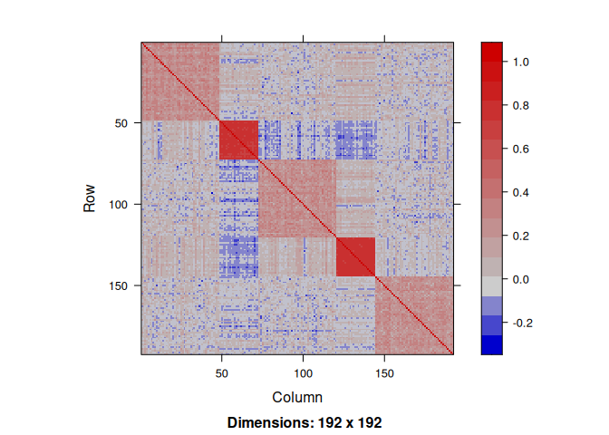
We draw the response variable by fixing the variance of the noise ratio to get an \(R^2\) equal to \(0.8\).
dat <- rlm(x,beta,mu,r2=0.8)
y <- dat$y
sigma <- dat$sigmaRegularization without prior knowledge
Now we try the available penalized regression methods in quadrupen to fit the regularization path to this data set
Elastic-net (\(\ell_1+\ell_2\) penalty)
plot(elastic_net(x,y, lambda2=1, intercept=FALSE), labels=labels)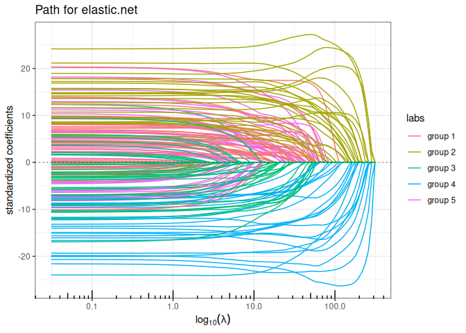
Bounded regression (\(\ell_\infty\) penalty)
plot(bounded_reg(x,y, lambda2=0, intercept=FALSE), labels=labels)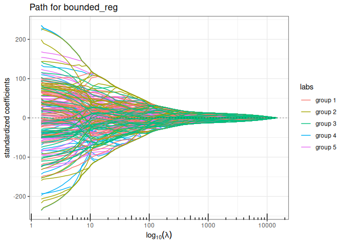
Bounded regression + Ridge (\(\ell_\infty+\ell_2\) penalty)
plot(bounded_reg(x,y, lambda2=5, intercept=FALSE), labels=labels)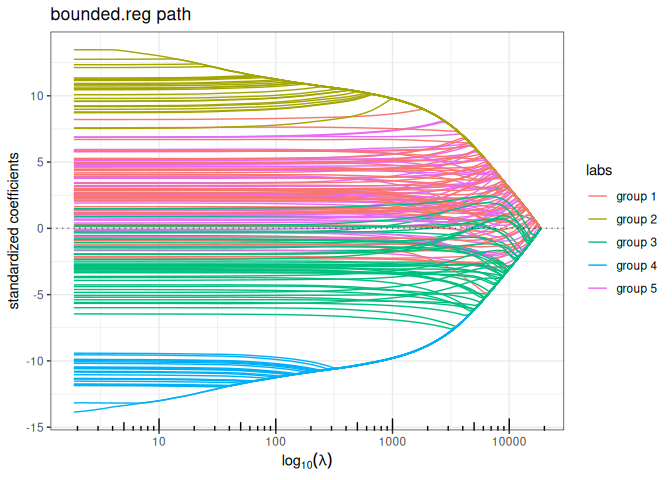
Lava (sparse + dense signal decomposition)
out_lava <- lava(x,y, lambda2=1, intercept=FALSE)
out_lava$plot_path(component = "sparse", labels=labels)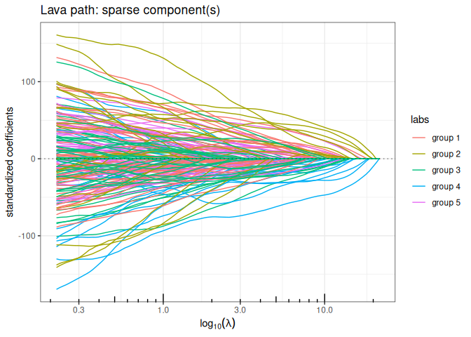
out_lava$plot_path(component = "dense", labels=labels)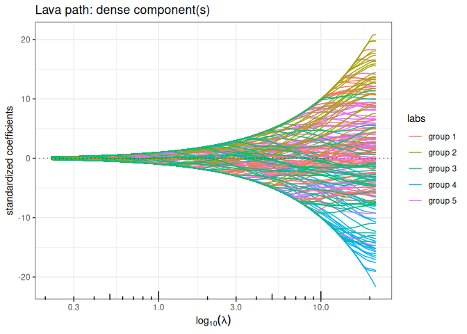
Regularization with smooth prior knowledge
Now let’s define the graph associated with the groups of the regressor and compute the Graph Laplacian. We add a small value on the diagonal to ensure strict positive definiteness (in the future, this matrix should preferentially be defined with a graph).
A <- Matrix::bdiag(lapply(group, function(s) matrix(1,s,s))) ; diag(A) <- 0
L <- -A; diag(L) <- Matrix::colSums(A) + 1e-2Now, we run all the methods having a ridge-like regularization by replacing the ridge penalty \(\| \cdot \|_2^2\) with \(\| \cdot \|_{\mathbf{L}}^2\) to enforce some structure in the regularization: the solution paths look a lot more convincing.
Structured/Generalized Elastic-net (\(\ell_1+\ell_2\) penalty)
plot(elastic_net(x,y, struct = L, lambda2=1, intercept=FALSE), labels=labels)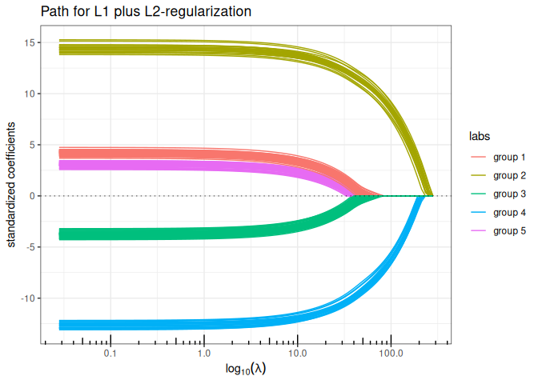
Bounded regression + structured/Generalized Ridge (\(\ell_\infty+\ell_2\) penalty)
plot(bounded_reg(x,y, struct = L, lambda2=5, intercept=FALSE), labels=labels)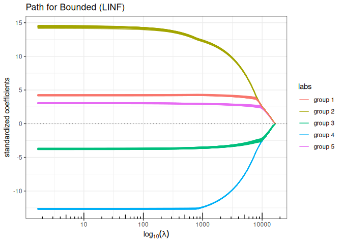
Lava (sparse + structured dense)
out_lava <- lava(x,y, lambda2=1, struct = L, intercept=FALSE)
out_lava$plot_path(component = "sparse", labels=labels)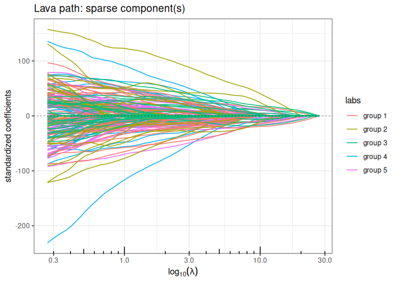
out_lava$plot_path(component = "dense", labels=labels)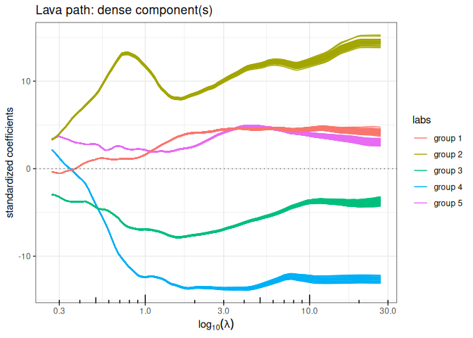
Regularization with hard prior knowledge
We can use the correlation structure as a proxy for forming groups of variables, and use group-sparse regularization. We offer three variants of group sparse regularization in quadrupen: standard group-lasso (\(\ell_1/\ell_2\) mixed norm), type 2 group Lasso ( (\(\ell_1/\ell_\infty\) mixed norm)) and the cooperative-lasso, an original proposition.
We first define a group index vector to encode the group memberships:
Group Lasso (group sparse L1/L2)
plot(group_lasso(x, y, group, intercept=FALSE), labels=labels)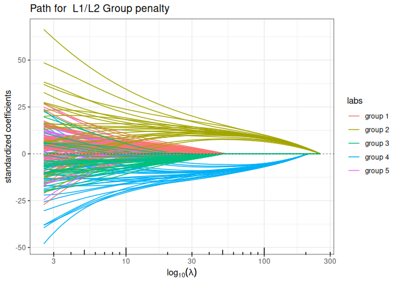
Sparse Group Lasso (mixing L1 + group sparse L1/L2)
plot(sparse_group_lasso(x, y, group, alpha = 0.75, intercept=FALSE), labels=labels)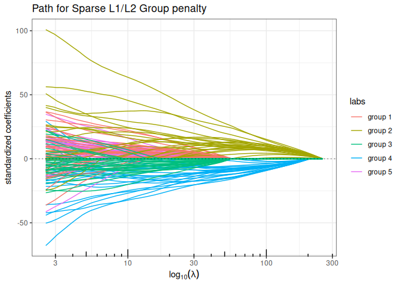
Group-Lasso (group sparse L1/LInf)
plot(group_l1linf(x, y, group, intercept=FALSE), labels=labels)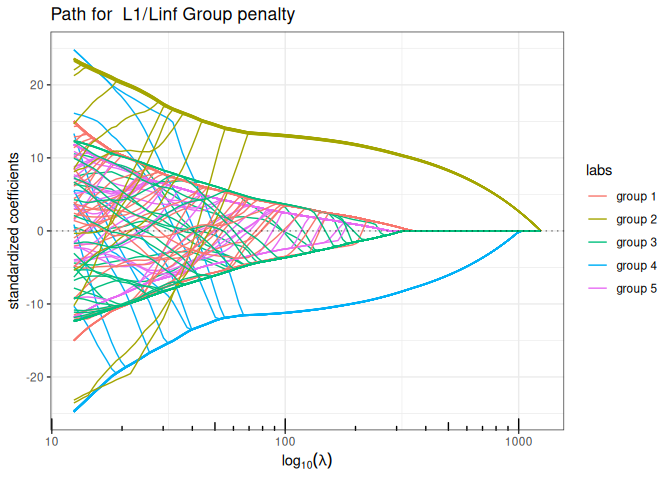
Sparse Group Lasso (mixing L1 + group sparse L1/LInf)
plot(sparse_group_l1linf(x, y, group, alpha = 0.75, intercept=FALSE), labels=labels)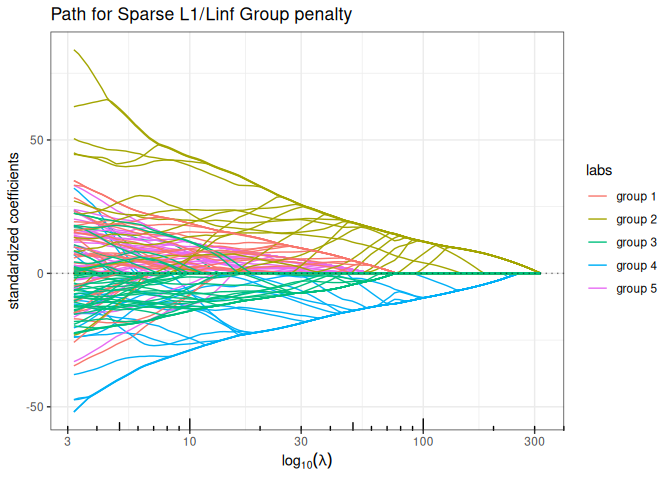
Cooperative-Lasso (sign-coherent group lasso)
plot(coop_lasso(x, y, group, intercept=FALSE), labels=labels)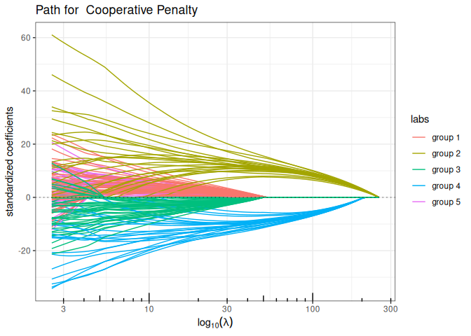
Sparse Cooperative Lasso (mixing L1 + Cooperative norm)
plot(sparse_coop_lasso(x, y, group, alpha = 0.75, intercept=FALSE), labels=labels)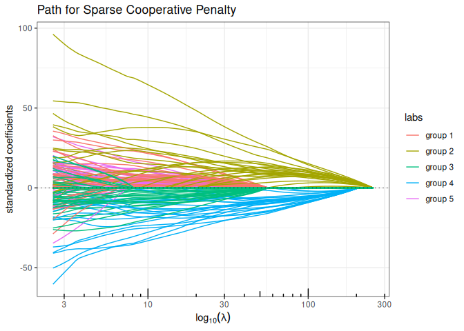
Regularization mixing smooth and hard prior knowledge
We let the possibility to add structured-\(\ell_2\) penalty to this mixed-group penalties, in order to introduce additional smoothing prior in the regularization, just like in the structured version of the Elastic-Net and Ridge regression. For this, the function group_sparse_lm is the more generic group-wise function, which generalize all the above model by letting the possibility to add an \(\ell_2\)-structured penalty.
Sparse Group-Lasso L2 + Structured ElasticNet (group sparse L1/L2 + structured L2)
plot(group_sparse_lm(x, y, group, type = "l2", alpha = 0.5, lambda2 = 2, struct = L, intercept=FALSE), labels=labels)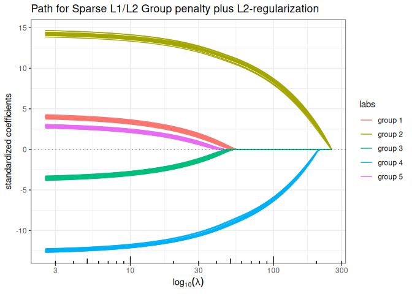
Sparse Group-Lasso LInf + Structured ElasticNet (group sparse L1/LInf + structured L2)
plot(group_sparse_lm(x, y, group, type = "linf", alpha = 0.5, lambda2 = 2, struct = L, intercept=FALSE), labels=labels)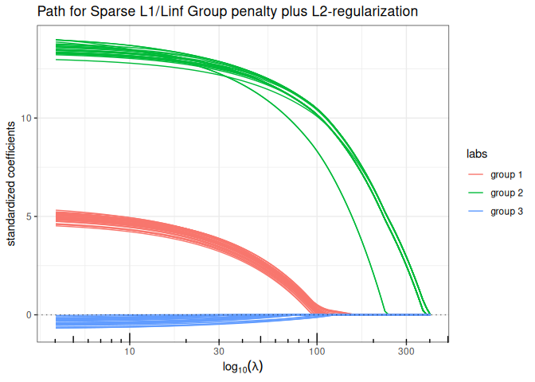
Sparse Cooperative-Lasso + Structured ElasticNet (sign-coherent group lasso + structured L2)
plot(group_sparse_lm(x, y, group, type = "coop", alpha = 0.5, lambda2 = 2, struct = L, intercept=FALSE), labels=labels)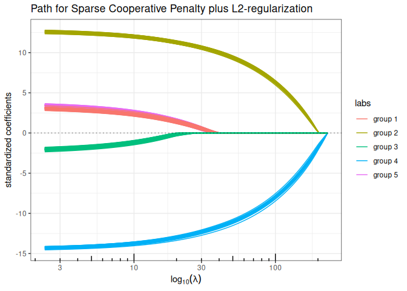
Appendix: functions for data generation
chol.uniform <- function(p,rho) {
q <- 0 ## sum_k^(i-1) c.k^2
cii <- 1 ## current value of the diagonal
c.i <- rho ## current value of the off-diagonal term
Cii <- cii ## vector of diagonal terms
C.i <- c.i ## vector of off-diagonal terms
for (i in 2:p) {
q <- q + c.i^2
cii <- sqrt(1-q)
c.i <- (rho-q)/cii
Cii <- c(Cii,cii)
C.i <- c(C.i,c.i)
}
return(list(cii=Cii, c.i=C.i[-p]))
}
rlm <- function(x,beta,mu=0,r2=NULL,sigma=1) {
n <- nrow(x)
if (!is.null(r2))
sigma <- as.numeric(sqrt((1-r2)/r2 * t(beta) %*% cov(x) %*% beta))
epsilon <- rnorm(n) * sigma
y <- mu + x %*% beta + epsilon
r2 <- 1 - sum(epsilon^2) / sum((y-mean(y))^2)
return(list(y=y,sigma=sigma))
}
## Blockwise structure
## the length of rho determine the number of blocs
## each group must be > 1 individual
rPred.block <- function(n, p, sizes=rmultinom(1,p,rep(p/K,K)), rho=rep(0.75,4)) {
K <- length(rho)
stopifnot(sum(sizes) == p | length(rho) != length(sizes))
Cs <- lapply(1:K, function(k) chol.uniform(sizes[k],rho[k]))
rmv <- function() {
return(
unlist(lapply(1:K, function(k) {
z <- rnorm(sizes[k])
Cs[[k]]$cii*z + c(0,cumsum(z[-sizes[k]]*Cs[[k]]$c.i))
}))
)
}
return(t(replicate(n, rmv(), simplify=TRUE)))
}